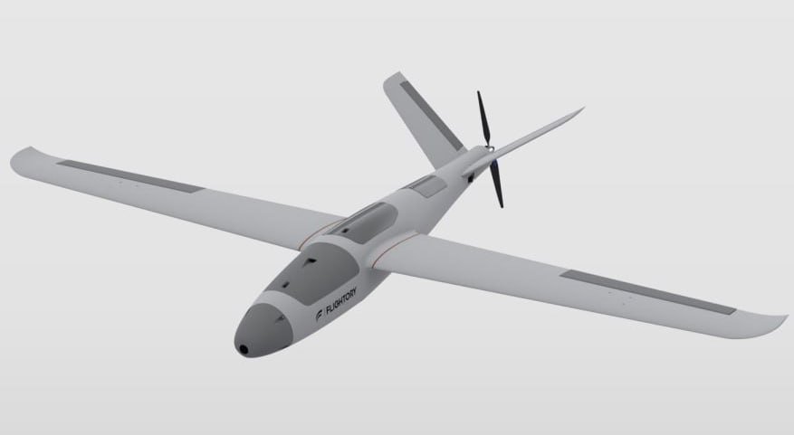

Скачай
оффлайн-версию
работает без интернета.
Модель самолета Stingray.
Модель самолета Stork.
Модель самолета Titan Falcon.
Безымянный 1737448560
Безымянный 1737449347
files
Материал изготовления: PLA, PLA+, PETG, ABS.
Fully 3D Printed RC Plane 2358659
Список сформирован из темы
3D-модели бпла
Источник темы
ТЭЧ БпЛА | FPV
Модель самолета Stork.
Из темы
3D-модели бпла
Из источника
ТЭЧ БпЛА | FPV
Модель самолета Stork.
Файл
stork_uav.zip
Файл
stork_uav.zip
Это вложение из поста
t.me/techuav/342/484

Модель самолета Stork. Материал изготовления: PLA, PLA+, PETG, ABS.
Файл
stork_uav.zip
Файл
stork_uav.zip
Веб-страница создана автоматически на основе
поста
пользователя
ТЭЧ БпЛА | FPV